先认清手里的工程
00:50 起，作者说 Neon 把四题收进一个工程：F1–F4 是可操作展区，F5–F8 是对应的原理实验台。稍后的目录图列出四个演示目录和四个实验台脚本，启动页上也能读到四个游戏名。作者称本次连同截图和几轮修正耗时十多分钟，上一期 Carbon 约四小时；视频呈现的是剪辑过程，缺少完整操作日志来复核这两段用时。
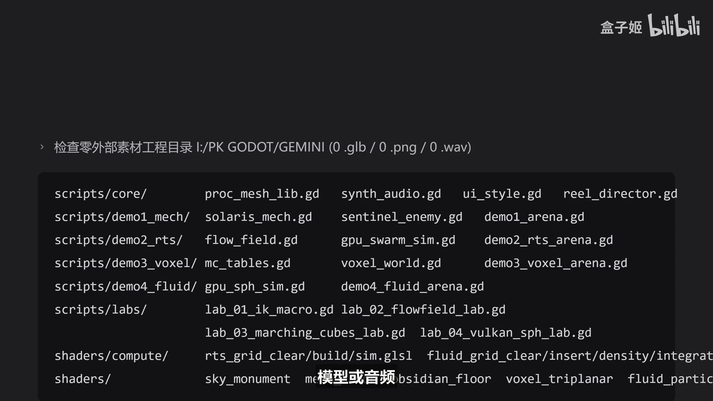
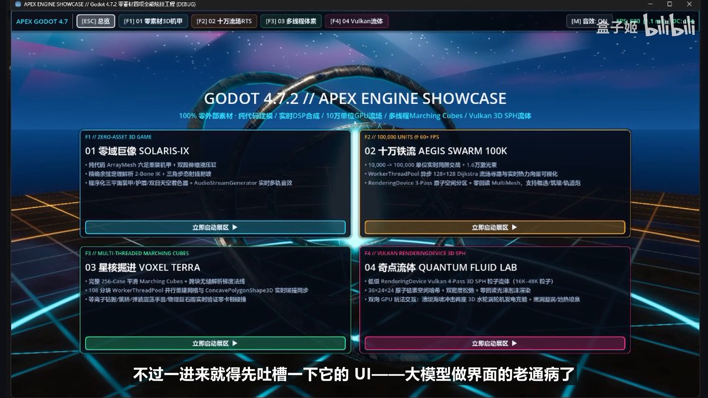
视频简介所链接的夸克公开列表只有 Fable5.2-Godot-四个工程.zip（227,173 字节）。本地同名解压目录的总 README 也标作 Fable 5.2，有四份 project.godot 和四个独立入口。全文凡引用可打开的本地代码，均来自这套 Fable 附件；谈到 Neon 则依据视频中展示的代码片段、界面和作者讲解。公开列表未给出哈希，未作远端归档与本地文件的逐字节校验。
原视频 ↗简介分享页 ↗本地工程总 README同作者的 Fable 视频 ↗
帧率怎么读：所核对的视频流为 1920 × 1080、30 FPS。下文分别标明某一帧的现场 HUD 读数、作者口述或附件 README 的历史自测。单张截图不能推出平均帧率、低分位帧时间或整段稳定性。点击截图可打开 1080p 原图，源码链接打开相应文件，标签中的 L 为行号。
第一题 · 零素材游戏
播放 01:30 ↗六足机甲怎样踩稳台阶？
视频中的《零域巨像》与附件中的《蚀原》都有六足机甲。相近的腿部效果，落在两种不同的游戏流程里。
Neon 的动作与声音
01:42 的战斗界面能读到波次、分数、击杀数和敌人数。02:19 的微距实验台把机身、腿、预计落脚点和轨迹同时画出来。按作者的讲解，先朝下一步的位置打射线找到地面，再用余弦定理根据两段腿长和脚的位置反求膝关节。六只脚分成两组三脚架交替迈步，所以即使换成台阶，支撑脚也能留在原地；机身随落脚高度倾斜，液压杆随关节伸缩。
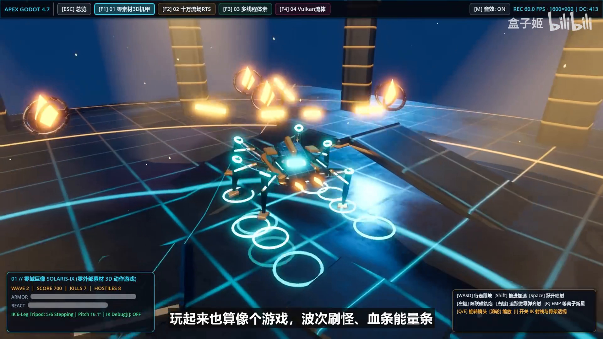
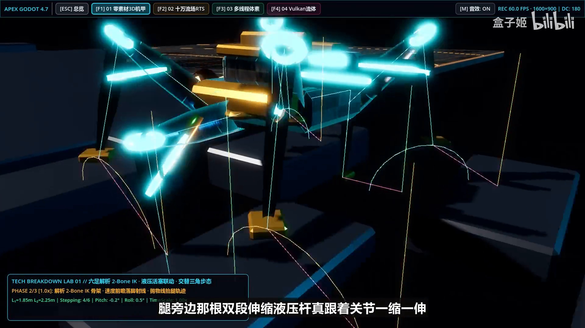
作者称战斗场景约 660 FPS，总览大厅约 800–900 FPS。01:42 这张图右上显示的是 REC 60.0 FPS；这行录制标记与作者口述的引擎运行帧率需要分开读。作者还称脚步和开火声由低频与噪声合成，AudioStreamGenerator 的供样逻辑跑在主线程。视频里清楚可见几何轮廓、发光材质和机甲姿态；镜头无法交代每种声音的线程归属，亦不足以评价长时间战斗手感。02:25 声音实现 ↗
Fable《蚀原》的源码
网格构建器沿轮廓逐圈连接顶点，机身、炮塔、腿和虫群据此造形。leg.gd 先调度哪条腿抬脚，再解关节角度。玩家的目标是收集五个核心、引出蚀母并击败它。音效在启动时合成为 WAV 缓冲，生成式音乐交给工作线程。--demo 的导演还能按秒数调 Boss 血量并强制出招，普通模式则根据碰撞与生命状态判定胜败。
第二题 · 万人同屏 RTS
播放 02:40 ↗十万个单位，各自在算什么？
视频中的《十万铁流》把单位更新留在显存。Fable 的万人战场给单位保留了 CPU 上的独立状态，再将结果成批交给显卡。
Neon 的流场、射击与绘制
改墙后重算一张 128 × 128 的流场，相当于给每格标注一条通往目标的低代价方向，附近单位就能共享路线。作者说 Dijkstra 在工作线程求解，GPU 的三个计算阶段承担格网与单位更新。03:07 的代码明确出现 imageStore(out_unit_tex, …)，旁边另有激光纹理写入；作者说明 MultiMesh 的顶点着色器直接取这些状态绘制，省去每帧把十万份位置读回 CPU 再上传的往返。
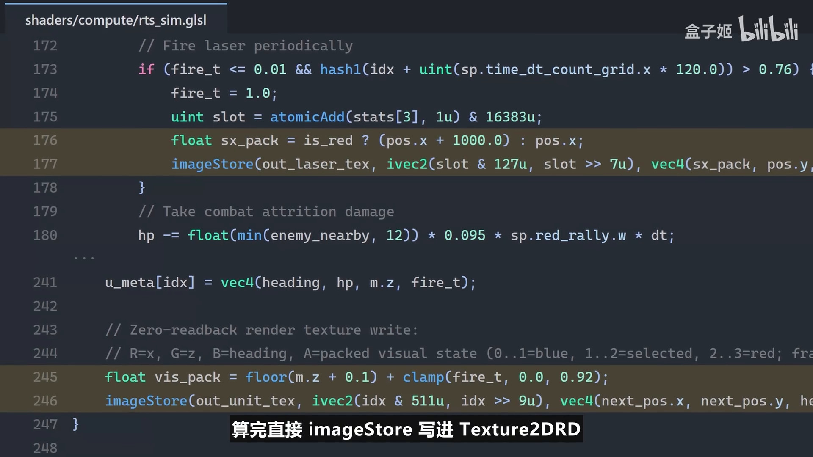
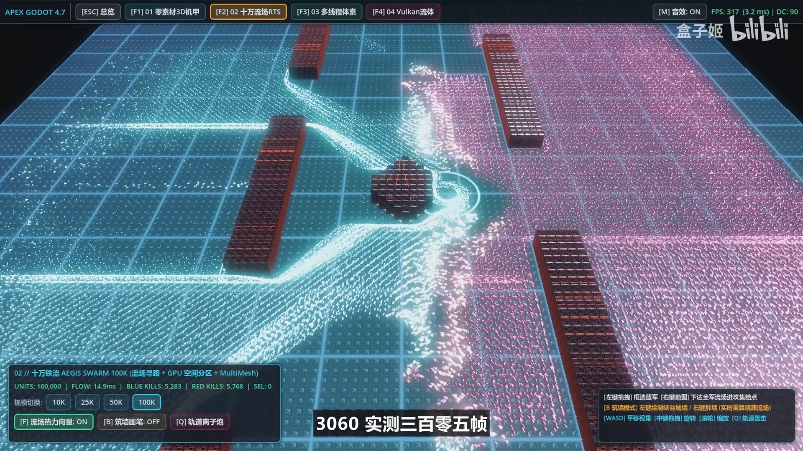
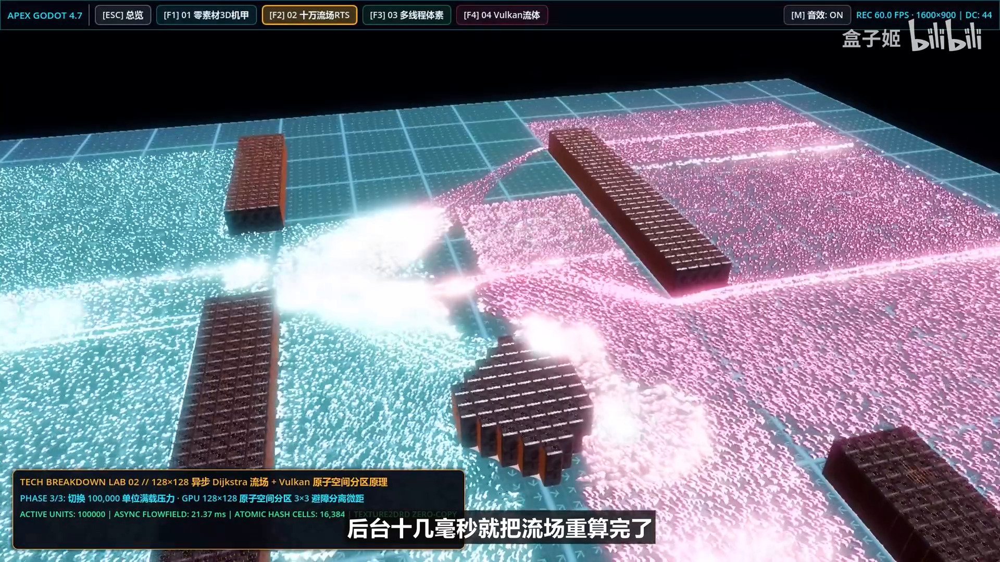
画面中 min(enemy_nearby, 12u) 参与扣血。作者还说明每格只存一个代表敌人的坐标，单位被消灭后会从边界补充。这个规模说明拥挤的队伍能同时移动、绕墙和产生战损；它无法据此换算十万场独立的武器碰撞、弹道命中或完整战术 AI 的成本。03:31 战损近似 ↗
Fable 万人战场的源码
默认开局双方各一万人。位置、速度、生命、兵种和命令各自存进连续数组；仿真目标为每秒 20 次，按 512 个单位一批分派给线程池。更新时只查周围 3 × 3 格寻找邻居，再处理个体攻击与移动。顶点着色器在前后两次位置之间插值，模拟频率低于绘制频率时，画面仍可平滑。其流场是 256 × 256，渲染采用分批 MultiMesh、距离细节等级与裁剪。
Fable 的 README 给出自己的设备与条件：10 万单位时记录为平均 127 FPS、每次模拟 25.9 ms；30 万时记录为 71 FPS、模拟约 10 Hz。作者说明同机有其他 GPU 项目运行，表格取三次里受干扰最少的一次，还列明了极密人群可能漏邻居、同目标并发命中可能丢失。两份读数的单位逻辑与采样条件不同，无法用相除的方式比较引擎或模型效率。
第三题 · 可破坏体素地形
播放 03:48 ↗岩块打穿后，碰撞也开洞了吗？
《星核掘进》把一个常被特效遮住的问题摆到了镜头前：小球能否滚进刚挖出的通道。
Neon 的局部重建
把每个采样点理解为固体或空气，一个立方格的八个角便有 256 种组合。Marching Cubes 根据组合寻找等值面穿过哪些边，在交点间拼出三角形。作者称场景切成 108 个 12³ 小块，刷子只标记受影响的块，边缘保留邻居样本，使两块沿同一条边算出相同的交点。小块交给工作线程更新，主线程按帧限额提交，避免一铲下去重做整座岛。
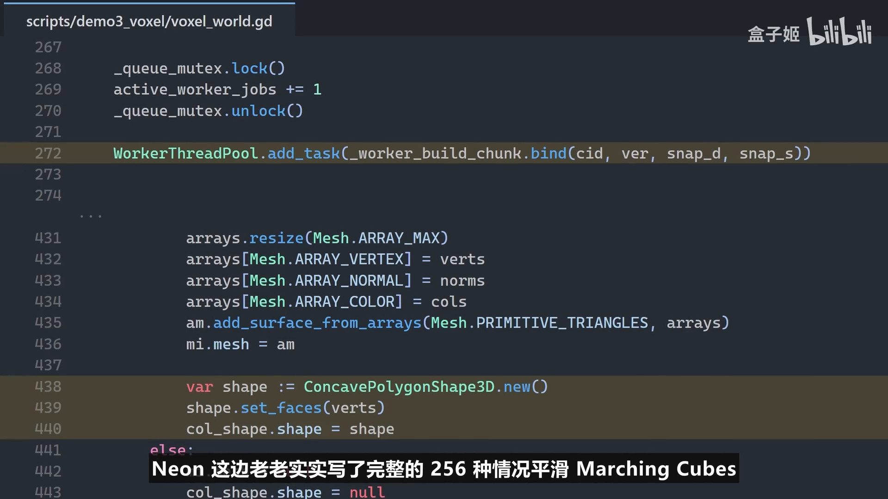
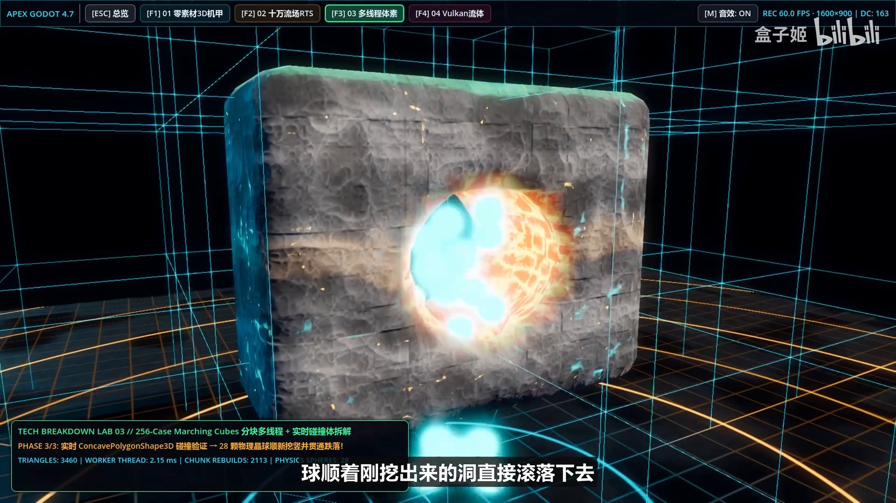
04:37 起作者演示往洞里倒入 28 颗刚体球。它们下落比看见表面变黑更有鉴别力，因为旧碰撞若还封住洞口，球就会被拦住。这个镜头支持本次编辑与碰撞相符。小块重建两毫秒出头、约 440 FPS 和地图约 90 米见方来自作者讲解。源码画面展示了派发任务及建网格、碰撞的片段，但单帧无法确定每行 API 最终在哪条线程运行。04:37 刚体球测试 ↗
Fable 体素地形的源码
固定的 512 × 160 × 512 密度场约含 4,194 万个采样点，划为 10,240 个 16³ 区块。启动时 GPU 先算高度，再算密度和材质，随后读回两份字节数组。编辑作业串行修改密度，只把受影响的区块入队；网格作业在后台生成三角形，主线程按时间预算替换网格和物理形状。源码能区分启动时的 GPU 生成和持续交互时的 CPU 重建，也能说明连续挖掘时为什么要管理积压任务。
第四题 · GPU 流体
播放 04:58 ↗同样一池水，为什么一边像珠子，一边能合成连续水面？
《奇点流体》用三维 SPH 粒子推动水轮。Fable 的 GPU 流体使用粒子与网格交换动量，再增加一层屏幕空间液面渲染。
Neon 怎样找到附近的水
SPH 用粒子周围的邻居估算密度和压力。如果让每粒水遍历整池粒子，数量一涨，比较次数就会急剧增加。05:15 的代码把位置映射到 36 × 24 × 24 的格子，用 atomicExchange 把同格粒子串成链表。压力计算只查附近格子；06:11 的 guard < 44 将一次格内链表遍历限制在 44 个节点。该上限作用于每个受查格子，拥挤时会跳过部分邻居。
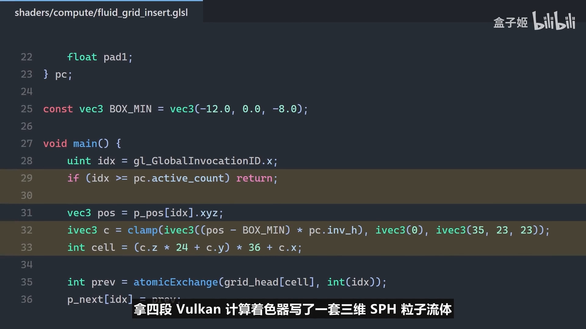
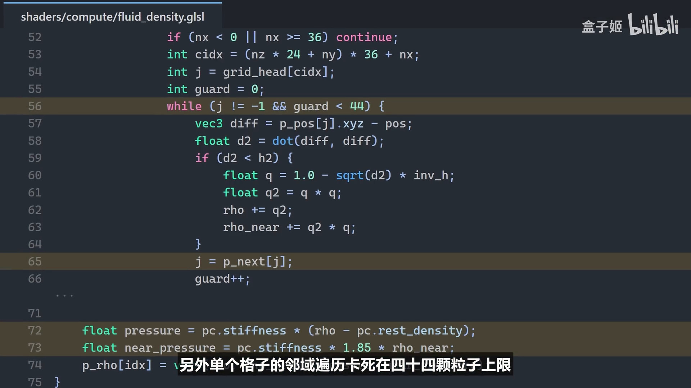
作者称四段计算着色器、每帧两个子步更新三维粒子。转动水轮的过程还有第二个方向：05:46 的代码根据叶片与水的相对切向速度计算冲量，向反馈缓冲累加，同时改变粒子速度。作者说明 CPU 收取力矩、更新转速并给反应堆充能。这种少量反馈和把整池粒子位置传回 CPU 的成本差异很大。
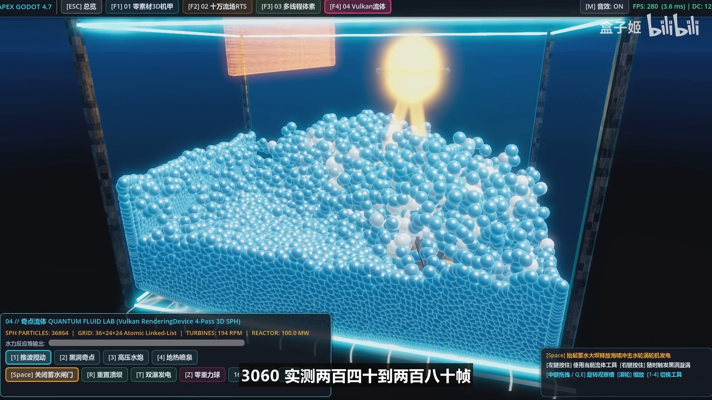
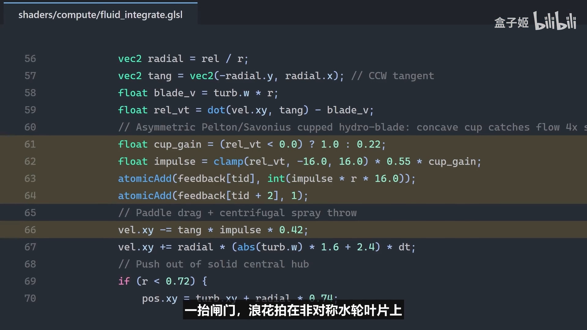
视频里的水呈现一颗颗有高光的球。作者说明绘制使用面向相机的球形广告牌，未加入屏幕空间的平滑液面重建。球形轮廓能看见，具体渲染步骤仍属于作者对工程的陈述。作者对这一段的口径是 RTX 3060 约 240–280 FPS。05:58 近看液面 ↗
Fable GPU 流体的源码
每个 MLS-MPM 子步先把压力与黏性项并入动量，再把粒子的质量与动量分摊到附近网格点，在网格上更新速度、重力作用和边界碰撞，再把新速度取回粒子并推进位置。浮力探针异步取回局部水况供刚体使用。渲染另走一条路径：先画粒子深度，再平滑深度、重建法线，沿折射方向采样密度场估算水厚，据此计算吸收和折射。即使两边都有球形粒子绘制，增加这些步骤后的最终表面也会不同。
《彩绘星灵》为什么会比视频里的十万单位更卡？
十万个士兵可以共用寻路结果、批量更新、一次提交许多实例。《彩绘星灵》的一笔颜料要在后续战斗里继续生效。仓库的历史数据还给出了一个比数画面对象更直接的解释：在星灵数量和游戏状态都相同的情况下，仅改变 CPU 上怎样处理和同步这些状态，就缩短了慢帧。
已有报告实测到了什么
以下数字均取自项目以前的测试记录。P95 为第 95 百分位，例如 16.73 ms 表示 95% 的帧在这个时间内完成；P99 更容易暴露偶发顿挫。60 FPS 的单帧预算约 16.67 ms。每段数值只在各自那次报告的条件下比较。
16 只星灵 · 规则结果相同，CPU 慢帧仍可大幅变化
11 月 19 日正式版阶段记录（基准 5779d14 加当时改动），固定负载、固定时钟，优化前后 1,800 步全局状态哈希一致。无窗口物理步均值 11.9 → 8.6–9.2 ms，无窗口帧间隔 P99 约 45 → 约 27 ms。改动覆盖索敌、笔刷几何、接触遮罩、角色对齐和快照复用等多处。该测试能证明 CPU 工作量影响慢帧，没有记录 16 只在同一帧齐射时各环节的独立耗时。
11 月 19 日交接报告，第 18–26 行六伙伴持续喷彩 · 旧版曾为已经落地的笔迹重复做几何工作
11 月 15 日 RTX 4060 窗口，六只一阶伙伴攻击一个移动的高血量敌人，限 60 FPS。去掉预热后，每组 540 帧。复用未变化的喷溅网格、把动画交给 shader、缩小攻击候选扫描并复用部分计算后，整帧 P95 130.28 → 16.69 ms，超过 33 ms 的帧从 111 个降至 1 个。数值反映整组改动的收益。11 月 17 日另一次加速压力夹具中，末段喷溅构网占笔刷显示耗时约 69%；这项比例的分母仅覆盖笔刷显示。同一份长时报告中，RTX 5060 窗口推进 300 个模拟秒，末 30 模拟秒的整帧 P95 从 76.34 降到 66.80 ms，优化后仍有慢帧。
11 月 15 日成对数据，第 101 行起 · 11 月 17 日定位与长时记录，第 26–39 行四伙伴密集战斗 · 对齐同一批角色也会多做一遍
11 月 17 日 RTX 4060、540 × 960，四伙伴、开场 24 敌，每 10 模拟秒再加 12 敌，双方各测 3,480 帧。修复重复同步、花园几何重建等问题后，角色与染色同步从 4,321 次降到 3,600 次。两侧都是 98 击杀、末次 1,604 个地格，整帧 P95 却从 45.62 降到 38.86 ms。这个满负载场景在修后仍有 286 帧超过 33.33 ms，游戏结果正常与玩家感到顿挫可以同时发生。
测试条件、修复与统计，第 81–91 行普通首星守卫战 · 三场战斗中的大多数帧接近 60 FPS
11 月 18 日 RTX 4060、540 × 960，通过玩家摇杆和界面推进。剔除面板及同步截图干扰后，节点 5、6、1 的整帧 P95 为 16.73、16.73、16.74 ms，单场最慢帧为 38.25、49.39、33.70 ms，视口 GPU P95 为 6.03–6.14 ms。这个样本支持“首星通常顺、偶有顿一下”。它没有抵达第三颗星球。另有 11 月 18 日合并前分块染色样本，累计 4,422 个地格后，3,540 帧中整帧 P95 为 16.13 ms、峰值为 147.53 ms；峰值原因没有被单独测出。
首星现场与过滤方法 · 三场原始统计 · 分块留色数据，第 66–68 行沿着一笔喷彩读现在的代码
以伙伴向前喷出一笔颜料为例。规则层先找出笔形覆盖了哪些半米地格。格中心擦到边缘时，部分候选最多再查 16 个子样点，确定笔刷透明轮廓是否真的着墨。接触判定沿球面把路径分成约 1 米或更短的小段，确定颜料落在地上、被障碍挡住，还是碰到了角色。命中又可能触发角色着色、扣血或地面持续伤害。屏幕上看起来只多了一笔，下一次攻击和移动看到的游戏状态也变了。
这些工作有不同的节奏。默认每秒 60 个物理步推进规则和角色对齐，约每 0.08 秒刷新一批世界显示及 HUD。当前地色已经按 32 米分块，每块对应 64 × 64 个半米格；正常增量更新只上传受影响纹理层，静止笔迹可以留在 GPU 缓存。11 月 15 日报告定位到的旧版反复构网问题已有对应修复，不能拿它直接归因今天的每次卡顿。
当前正式版源码 · 本次读取的工作区基准 6e55caa
和视频放在一起看
单位数说明画面规模，每帧要兑现的交互决定了其中多少工作可以合批。 Neon 的十万单位共用流场，按空间格统计人群，把一个格里的敌人压缩成代表位置，在显存里做同一套更新。03:14 HUD 同时显示 100,000 单位、317 FPS 和 90 次绘制调用。一方可以用一个格子代表一群敌人，另一方要记住具体哪只敌人被哪笔颜料击中、哪些地格之后仍然有伤害；仅凭兵多还是宠少，看不出哪方每帧更忙。
Neon 的 RTS、机甲、地形和流体分别在不同展区运行。作者口述 RTX 3060 上 RTS 约 305 FPS，B 站可取得的视频流为 30 FPS，缺少该展区逐帧原始分布。《彩绘星灵》的历史报告则同时覆盖限帧窗口、无窗口固定时钟和高负载夹具。当前正式工程还使用 Compatibility，Web 导出预设关闭线程支持，视频里的 Vulkan compute 路径无法原样用于这份网页交付。现有材料可以解释工作量的差异，也能证明旧版某些 CPU 路径确实拖慢整帧；没有同机、同后端、同工作负载的数据可以得出一个性能倍数。
如果你指的是第三颗星球随着游玩时间变卡，仓库已有玩家反馈，仍缺同一自然局贯穿三颗星球的逐帧记录。已有首星、16 星灵和加速长局报告都无法确认那次退化由笔触、资源残留、GPU 还是其他环节主导。“手机 30 帧”文档记录的是已放弃的桌面沙盒，未做手机实测。